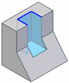

Extrude command bar (synchronous)
- Available Actions
-
Lists alternate actions which are available for the selected element. When you have selected a sketch region, the default action in a new part document is to construct an extruded feature.
- Extrude
-
Specifies that you want to construct an extruded feature.
- Revolve
-
Specifies that you want to construct a revolved protrusion.
- Extent Type
-
Defines the depth of the feature or the distance to extrude the sketch to construct the feature. You can specify that the feature extends in one direction only or two directions symmetrically. The extent options are: Finite, Through All, Through Next, and From/To Extent.
- Finite
-
Sets the feature extent so that the sketch is extruded a finite distance to either side of the sketch plane, or symmetrically to both sides of the sketch plane. You can type the distance into the dynamic input box or click to define the extent.
- Through All
-
Sets the feature extent so that the sketch is extruded through all faces of the part, starting at the sketch plane. You can extrude the sketch to either side of the profile plane, or to both sides.
- Through Next
-
Sets the feature extent so that the sketch is extruded through only the next closed intersection with the part on the selected side. You can extrude the sketch to either side of the sketch plane, or to both sides.
- From/To
-
Sets the feature extent so that the sketch is projected from the sketch plane to another specified surface. The From extent is automatically set to the sketch plane. The To extent can be any valid surface on the model.
Note:If the region is selected first, the From extent surface can be redefined be dragging the extrude handle origin to another surface or plane. Click the extrude handle. Select the To surface or plane. Right-click extrudes to the profile plane. A PMI dimension is automatically added for the extent length.
- Symmetric
-
Specifies that the feature extent is to be applied symmetrically about the sketch plane.
- Add/cut
-
Specifies whether you want to let cursor position determine whether material is added or removed. When constructing a base feature, only the Extrude option is available.
- Automatic
-
Specifies that material is added or removed from the model based on the current cursor position relative to the model.
When constructing the base feature, material is always added to form a solid body.
When constructing additional features, you can use cursor position to dynamically define whether material is added or removed. If you position the cursor such that the feature is extended away from the enclosed volume of the solid body, material is added. If you position the cursor such that the feature is extended toward the volume of the solid body, material is removed.
The Automatic option is the preferred option in most cases. For models with complex geometry, you may want to specify the Extrude or Cutout options.
- Add
-
Specifies that material is added to the model.
- Cut
-
Specifies that material is removed from the model.
- Open/Closed Sketch
-
Specifies whether adjacent model edges are considered part of the sketch region when an open sketch is attached to one or more model edges. This allows you to control how adjacent faces are trimmed in certain situations.
- Open
-
Ignores adjacent model edges. When this option is set, additional faces may be modified, such as illustrated in the cutout example below.

- Closed
-
Includes adjacent model edges. When this option is set, fewer faces may be modified, such as illustrated in the cutout example below.

- Side Step
-
Selects the side of the profile on which the feature will be created.
- Treatments
-
Specifies that you want to define draft or crowning for the feature.
-
When you set this option, you will be prompted to define treatment parameters after you define the extent for the feature.
-
When you clear this option, you will not be prompted to define treatment parameters after you define the extent for the feature.
-
- Internal Face Loops
-
Specifies to include or exclude the internal loops of selected faces.
- Include Internal Loops
-
Includes the internal loops of selected faces.
- Exclude Internal Loops
-
Excludes the internal loops of selected faces.
- Use Only Internal Loops
-
Uses only the internal loops of selected faces.
- Apply Cut Features
-
Option only available in a multi-body file with the Cut and Finite extent options set.
- Cut Active Body
-
When you set this option, the cut is only applied to the active design body.
- Cut Selected Bodies
-
When you set this option, the cut is applied to all design bodies that the cut intersects. You can deselect intersected design bodies to remove them from the cut operation.
- Keypoints
-
Sets the type of keypoint you can select to define the feature extent. You can define the feature extent using a keypoint on other existing geometry. The available keypoint options are specific to the command and workflow you use.

Sets the any keypoint option.

Sets the end point option.

Sets the midpoint option.

Sets the center point option. You can select the center point of an arc or circle.

Sets the tangency point option. You can select a tangent point on an analytic curved face such as a cylinder, sphere, torus, or cone.

Sets the silhouette point option.

Sets the edit point on a curve option.

Sets the no keypoint option.
How do I
Construct a protrusion or cutout (ordered)Define the extent of an extruded feature
Construct a base feature
Construct a cutout (ordered)
Construct a hole
Construct a hole (ordered)
Construct a hole on a cylinder
Construct an extrusion: base feature
Construct an extrusion or cutout: subsequent features
Construct a protrusion or cutout: model face
Construct a Normal Protrusion
Construct a Normal Cutout (Part Environment)
Finish the Feature
Examples: Constructing Protrusions With the Finite Option
Examples: Constructing Protrusions With the Through All Option
Examples: Constructing Protrusions With the Through Next Option
Examples: Constructing Cutouts With the Through All Option
Examples: Constructing Cutouts With the Through Next Option
Examples: Constructing Cutouts With the Finite Option
Learn more
Part modeling workflow overviewPart modeling: Tips for getting started
Look up more details
Extrude command (synchronous)Extrude command (ordered)
Extrude command bar (ordered)
Cut command
Cut command bar
Demo: Create protrusion or cutout using keypoint
Normal Protrusion command
Normal Protrusion command bar
Normal Cutout command (Part environment)
Normal Cutout command bar (Part environment)